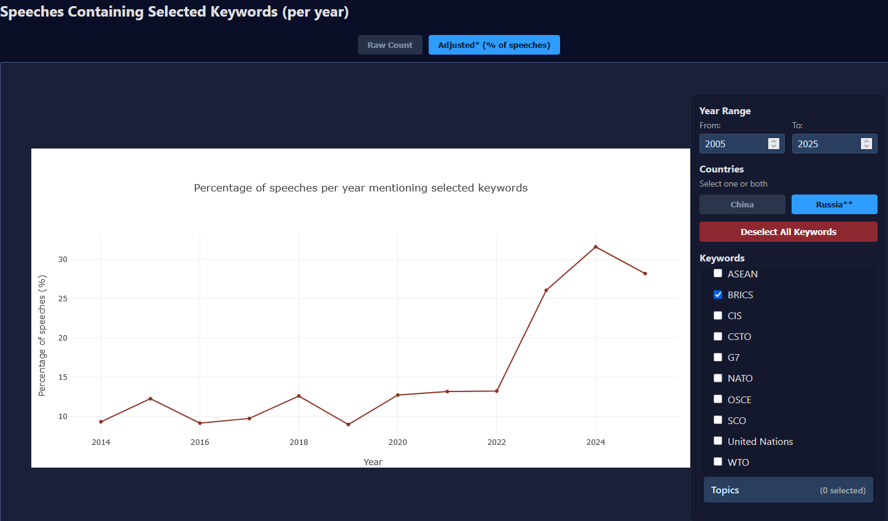

Top
in China and Russia Speeches
China
Russia
Curated insights and tools
to generate your own.
Geopolitical Speech Lab transforms thousands of official speeches into structured, searchable data and interactive visualizations—so you can trace language patterns over time with clarity and consistency.
Rather than reading speeches one by one, you can compare how China and Russia prioritize key issues, track shifts in emphasis across years, and interpret rhetorical change in the context of global events.
For students, researchers, and practicioners.
Our Tools
Searchable, Downloadable Database of Speeches
Sourced directly from China Ministry of Foreign Affairs and Russia Foreign Minister speeches, updated through 2025.
Vizualizations of Keywords over Time.
Frequency analysis and comparative language patterns you can explore and track across years and major global events.
Aggregated Counts of Entities and Noun Chunks per Country
SpaCy-powered text analysis to demonstrate the countries, organizations, and topics that dominate diplomatic discourse.
Term Frequency-Inverse Document Frequency Statistics
See the most frequently used terms in each country's speeches, weighted by their importance across the corpus using NLTK.
Example
One pattern, surfaced at scale

After the full-scale invasion of Ukraine, BRICS featured significantly more prominently in the speeches of Russian Foreign Minister Sergei Lavrov. By 2024, roughly 30 percent of his speeches and public appearances featured references to BRICS, potentially reflecting Russia’s priority of promoting alternatives to Western-led institutions and aligning itself with other emerging powers representative of the “global majority” in an emerging multipolar international system.
Why analyzing official rhetoric matters
Important diplomatic signals are often embedded in foreign languages, lengthy speeches, and fragmented official sources. By focusing on primary source material—official government speeches—Geopolitical Speech Lab reduces the time and language barriers involved in understanding how governments frame policy issues over time and across regions.
Rather than offering editorial interpretation, the platform enables users to conduct their own analysis, emphasizing patterns, trends, and language usage—supporting independent, evidence-based conclusions.